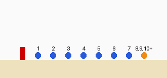
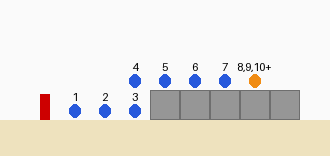
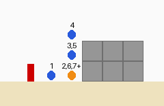
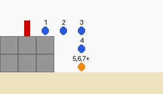
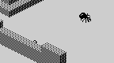
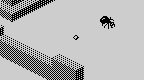
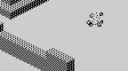
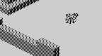

| Ant Attack | How a grenade flies |
There is one grenade, the third object record ($B4A0), and MOVE_GRENADE handles it every frame: THROW_GRENADE to throw it or keep it flying, MOVE_OR_RESPAWN to move it like anything else, BLAST_FRAME for its explosion's pictures and GRENADE_BLAST to see what the explosion caught. Between throws it waits at its home, $00, $40, 0, far outside the walls and out of every view.
S, D, F and G throw. THROW_GRENADE reads the A-to-G half-row and keeps bits 1 to 4 -- S, D, F and G -- and that number is the flight time in frames, kept in $B42E: 2, 4, 8 or 16, so the keys further along throw further. Keys held together add up. The grenade starts in the player's cell, facing his way, and moves a cell every frame, so it explodes as many cells ahead as it flew frames. Measured outside the walls, where nothing is in the way:
| Keys | Bits | Flight frames | Cells expected | Cells measured | Grenades left after |
|---|---|---|---|---|---|
| S | $02 | 2 | 2 | 2 | 19 |
| D | $04 | 4 | 4 | 4 | 19 |
| F | $08 | 8 | 8 | 8 | 19 |
| G | $10 | 16 | 16 | 16 | 19 |
| S and G | $12 | 18 | 18 | 18 | 19 |
Every throw costs one of the grenades counted at $B42F, which BASIC sets to 20 for each attempt (line 220); with none left the keys do nothing (confirmed: staged with none left, nothing was thrown). Only one grenade can be out: a key is ignored while one is flying or exploding, and a key held down throws again the moment the last has gone home -- held for 14 frames, S threw on frames 1, 8 and used 2. The throw sets the player's picture to arms out for the frame.
In flight the grenade is drawn as frame $F4 outright (bit 7 of its animation byte). When the time runs out it explodes where it is: THROW_GRENADE sets its explosion countdown to 5 and stops it moving. MOVE_OR_RESPAWN counts that down in the same frame, so BLAST_FRAME shows $F4, $F7, $F6 and $F5 -- the countdown's low two bits -- over four frames, and on the fifth the grenade goes home. Its own frames, $68 to $6B, are never seen. The four explosion frames, drawn by DRAW_SPRITE:
Frames $F4, $F5, $F6 and $F7.
The grenade is not thrown through the air. It moves along the ground by the same MOVE_OBJECT as the people, at its own height: it has bit 4 of the flags, so it climbs a one-block step as the rescued person does, and it falls off edges with the same grace frame (see how people move). Thrown with F from the red cell, the grenade's place each frame, seen from the side (the numbers are the frames it spent in each place):
| Set piece | What the code says | The grenade's path | Result |
|---|---|---|---|
| Open ground | straight on, a cell a frame, and explodes eight cells on |  | exploded +8 cells along, at height 0 |
| A wall one block high | blocked, it rises a block in its own cell (bit 4, as the rescued person does) and rolls on along the top |  | exploded +7 cells along, at height 1 |
| A wall two blocks high | it climbs a block, tries again and climbs another, but has used its grace frame and falls back: it cannot get over |  | exploded +2 cells along, at height 0 |
| Off a ledge two blocks high | the grace frame's step off the edge, a drop, and a landing that stuns it, as it would a person, so that it sits still until its time runs out |  | exploded +3 cells along, at height 0 |
The people are not in the map, so the grenade cannot collide with them. Instead THROW_GRENADE compares its cell and height with the player's and then with the rescued person's on every frame of the flight, the last included, and anyone it shares a cell with is blown up: their explosion countdown set, and an event of 8 for HANDLE_EVENTS, which puts their energy straight to 0 -- “SILLY! YOU BLEW YOURSELF UP !” or “HOW COULD YOU ? AFTER ALL WE'VE BEEN THROUGH ?” -- and the attempt is over. The explosion itself harms only ants; a person beside it is safe. On staged scenes:
| Situation | Keys | What happened |
|---|---|---|
| Throwing with F while walking forward (V held) | V and F | blown up on frame 2, in the cell +3 along, at height 0; energy 0 after; PLAY back to BASIC after frame 6 |
| Throwing with F at a three-block wall in the next cell | F | blown up on frame 5, in the cell +3 along, at height 0; energy 0 after; PLAY back to BASIC after frame 9 |
| The rescued person two cells ahead, stunned so she stays put | F | blown up on frame 3, in the cell +3 along, at height 0; energy 0 after; PLAY back to BASIC after frame 7 |
| The rescued person beside where a grenade thrown with S explodes | S | untouched: energy 20 after 16 frames |
So a grenade must not be thrown while walking forward -- the player walks into it the next frame -- nor at a wall right in front, where it climbs up in the player's own cell and falls back on him; and the person being rescued is at risk along the whole flight, not just where it lands.
While the countdown runs, GRENADE_BLAST runs BLAST_ANT for each of the five ants at the grenade's height: blown up within four cells, stunned within seven. The details, and what it does to a paralysed ant, are on how the ants hunt. A worked example: F thrown at an ant nine cells away, stunned so that it stays there, run in the simulator a frame at a time:

Frame 1: in flight, 8 frames to go.
Frame 3: in flight, 6 frames to go.

Frame 5: in flight, 4 frames to go.
Frame 7: in flight, 2 frames to go.

Frame 9: exploding.
Frame 10: exploding.

Frame 11: exploding.
Frame 12: exploding.
The ant was blown up on frame 9, the frame the grenade exploded a cell short of it. From then on it is drawn as the blast only on the frames it skips -- the flicker in frames 10 to 12 -- and on frame 18 it was back at its home in the nest.